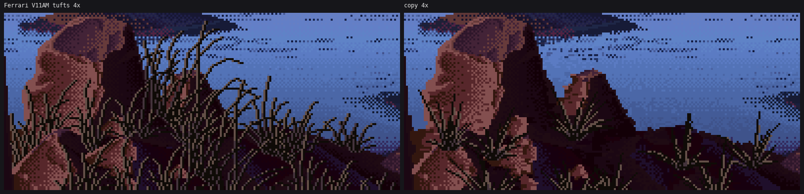

2. Read the master from his indices: Ferrari's dry tufts
Partial: I learned the procedure, but the copy doesn't pass at 8×.
Ferrari never painted sagebrush. The closest things he did paint:
- V11AM's dry grass tufts in front of the rock: near-scale bunchgrass, backlit.
- V16PM's golden bank: cured grass as a mass.
- V11AM's mesa: a fluted cliff over a striated apron, the closest thing to a coulee rim.
I copied only the first. The other two I read by eye, and that's where the tussock mass (page 4) and the rim flutes (page 9) come from.

Print his indices as false colour
His Living Worlds scenes are index maps, so you can ask which indices a passage uses and paint each one a loud colour. lw.py (borrowed from the willow student) loads them. I counted the indices in the tuft crop, found that three dominated, and painted them:
import lw, numpy as np
from PIL import Image
d = lw.load("V11AM"); idx = d["idx"]
r = idx[410:480, 230:330]
out = np.zeros(r.shape + (3,), np.uint8); out[:] = [60, 90, 160] # everything else: blue
out[r == 49] = [0, 0, 0]; out[r == 50] = [200, 60, 60]; out[r == 51] = [255, 230, 120]
Image.fromarray(np.repeat(np.repeat(out, 8, 0), 8, 1)).save("stage0/v11am_tuft_idx_8x.png")
(The first time I ran it, np.zeros(...) + [60, 90, 160] silently promoted the array to int64 and PIL refused it. Assign into a uint8 array instead.)

What that picture says, and what I measured:
- Three indices only. 49 is near-black (L 12), 50 a dim mauve (L 55) and 51 a warm grey (L 83). Grass covers 25% of the crop. Of the grass, 28% is index 51 and 14% index 50.
- Every blade is a 2-px stroke: a dark clean-run line with a 1-px light line on its sun side. The light sits to the right of steep runs and on top of shallow runs. The very tip is the dark line alone.
- Low on the tuft the light partner drops to the mid index, and the base is a dense dark core with mid flecks.
- Blades are stiff at the base and bend at the tip, and they cross. Where a light pixel would land on another blade's dark line, the dark usually wins, so the crossings stay legible.
Regenerate it
The copy keeps his palette and a sketch, and generates every blade pixel. The sketch is two things: the crop with all grass pixels removed (each filled from its nearest non-grass neighbour), and tuft centres found as maxima of the blurred dark-grass density.
# s0_tufts.py
def sketch():
d = lw.load("V11AM")
idx = d["idx"][Y0:Y1, X0:X1].copy()
g = np.isin(idx, [DARK, MID, LIT])
_, (iy, ix) = ndi.distance_transform_edt(g, return_indices=True) # fill grass from neighbours
bg = idx[iy, ix]
dens = ndi.gaussian_filter((idx == DARK).astype(float), 6)
mx = (dens == ndi.maximum_filter(dens, 17)) & (dens > 0.18)
cy, cx = np.nonzero(mx)
return d, idx, bg, list(zip(cx, cy, dens[cy, cx]))
The blade is a curve whose bend gathers toward the tip, snapped to clean runs:
# grass.py
def tip_arc(x0, y0, ang0, length, bend, nseg=4, power=2.2):
"""Like sp.arc_points, but the bend gathers toward the tip (a grass blade is stiff at the
base and droops at the end)."""
pts = [(x0, y0)]
x, y = x0, y0
seg = length / nseg
for i in range(nseg):
t = (i + 0.5) / nseg
a = ang0 + bend * t ** power
x += np.sin(a) * seg
y -= np.cos(a) * seg
pts.append((x, y))
return pts
sp.polyline_clean turns those points into pixels with slopes snapped to 0, 1:4, 1:3, 1:2, 1:1, 2:1, 3:1, 4:1 or vertical, each step an equal run. That's the studio's clean-run rule for narrow forms. Then each blade pixel gets its role:
def blade_roles(pix, lit_side=1, tipdark=0.25, low_mid=0.35, low_dark=0.0):
"""Pixel roles for one blade: [(x,y,role)], role 0 dark, 1 mid, 2 lit."""
out = []
n = len(pix)
for i, (x, y) in enumerate(pix):
out.append((x, y, 0))
t = i / max(1, n - 1) # 0 base -> 1 tip
if t > 1 - tipdark or t < low_dark:
continue
j0, j1 = max(0, i - 2), min(n - 1, i + 2)
dx = pix[j1][0] - pix[j0][0]
dy = pix[j1][1] - pix[j0][1]
role = 2 if t > low_mid else 1
if abs(dy) >= abs(dx): # steep: lit on the sun side horizontally
out.append((x + lit_side, y, role))
else: # shallow: lit on top
out.append((x, y - 1, role))
return out
draw_blade_pairs lays the roles down in shuffled order. A light pixel skips another blade's dark pixel 70% of the time.
How it went

v1: too few blades, too short. The mesa is visible where he has a thicket.

v4a–c: more blades, fanned wider. Now it's a thatch of long comb teeth.

v5b, the one I stopped at. The light share matches (28% against his 28%). The coverage is 31% against his 25%.
Why it doesn't pass:
- His blades are shorter and curl over sooner, so the tuft tops make a continuous ragged fringe. Several of mine shoot as straight whips into the sky (the critic's round 1).
- His mid index is 14% of the grass and mine is 3%. He uses the mid where blades cross and in the core, and I only use it low on each blade.
- I measured shares and never measured blade length. Next time I'd run connected components on index 49, take the length distribution of the blades, and fit
len_muandlen_sdto it instead of eyeballing.
I stopped because the procedure was clear and my subject wasn't his tufts. What I carried forward:
- the three-step blade;
- the tip-gathered bend;
- "the dark wins at crossings";
- and, from V16PM read by eye, that a lit grass mass is mostly flat light with sparse dark strands (page 4). That last one mattered more than the whole copy.